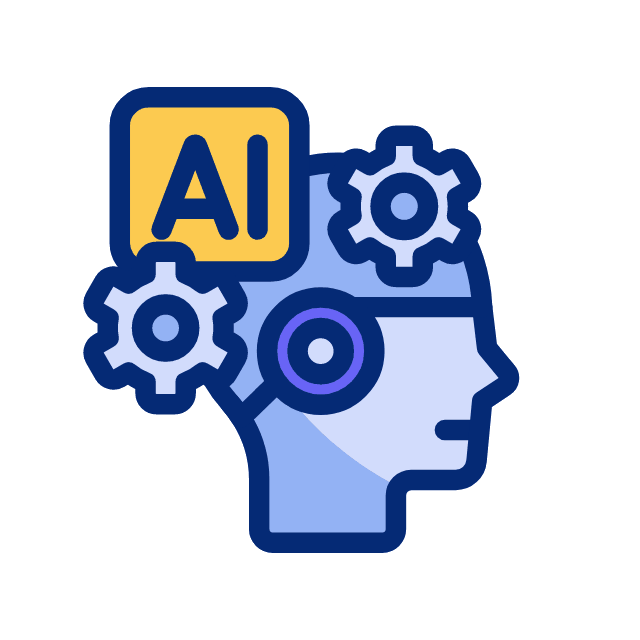

¿Qué es la La Inteliencia Artificial ?
La Inteligencia Artificial o IA es un campo de la informática que se enfoca en la creación de sistemas y máquinas capaces de realizar tareas que normalmente requieren inteligencia humana, como el aprendizaje, el razonamiento y la resolución de problemas.
Orígenes e historia de la inteligencia artificial
El término "inteligencia artificial" (artificial intelillence) fue acuñado por John McCarthy en 1956 durante la Conferencia de Dartmouth, un evento histórico que reunió a algunos de los mejores científicos de la época para discutir la posibilidad de crear una máquina que pudiera pensar como un ser humano.
Los cuatro tipos de inteligencia Artificial:
- Sistemas que piensan como humanos: se enfocan en la emulación de la inteligencia humana, tanto en términos de comportamiento como de pensamiento. Buscan imitar la forma en que los humanos piensan y resuelven problemas.
- Sistemas que actúan como humanos: se enfocan en la emulación de la inteligencia humana, pero en términos de comportamiento. Buscan imitar la forma en que los humanos se comportan y actúan en el mundo.
- Sistemas que piensan racionalmente: se enfocan en la resolución de problemas de manera lógica y racional. Buscan maximizar la eficiencia y la precisión de sus decisiones, sin considerar necesariamente el comportamiento humano.
- Sistemas que actúan racionalmente: se enfocan en la toma de decisiones y la acción en el mundo, buscando siempre tomar la mejor decisión posible basada en la información disponible
Peligros de la inteligencia artificial
Con su capacidad de aprender y evolucionar de forma autónoma, la IA podría superar algún día la inteligencia humana. Entonces podría decidir volverse contra sus creadores.
Ya se cree que el futuro de la inteligencia artificial depende únicamente de cómo decidan utilizarla los humanos. Incluso una IA aparentemente inofensiva podría manipularse y utilizarse de forma malintencionada. Ya podemos verlo con el incremento de los «DeepFakes»: vídeos falsos creados mediante Deep Learning para mostrar a una persona en una situación comprometida.
Ventajas de la Inteligencia Artificial
El desarrollo de la IA trae consigo muchos beneficios para la sociedad: